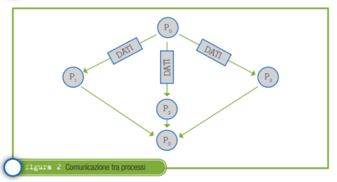

Per esempio il processo P0 passa il controllo al processo P1 , il quale quando ha terminato restituisce il controllo a P0(Figura 1).
Per esempio il processo P0 passa il controllo al processo P1 , il quale quando ha terminato restituisce il controllo a P0(Figura 1).
Programmi concorrenti prevedono quindi processi (o thread) che competono tra loro per le risorse di sistema, si sincronizzano e comunicano tra loro.
Essi sono piu versatili ed efficienti rispetto a quelli e richiedono applicazioni più complesse e sofisticate.
Un programma concorrente prevede come requisiti tutti quelli previsti da una normale elaborazione sequenziale più alcune primitive di sistema per la creazione e la terminazione dei processi e per consentire ai processi di sincronizzarsi e poter comunicare tra di loro.
Per esempio il processo P0 passa il controllo al processo P1 , il quale quando ha terminato restituisce il controllo a P0(Figura 1).
 ln questo caso il processo P0 comunica dei dati ai processi P1 e P2, i quali, quando hanno terminato restituiscono il controllo a P0(Figura 2).
Si ha quindi la necessità di meccanismi e politiche che permettano ai processi di scambiarsi informazioni per poter lavorare in modo coorrativo al fine di trasferire e condividere informazioni.